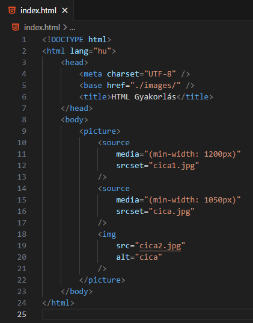
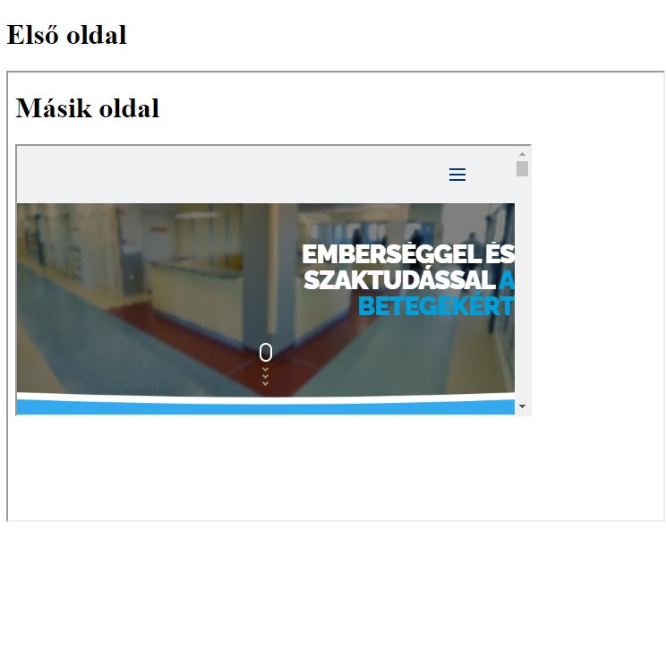
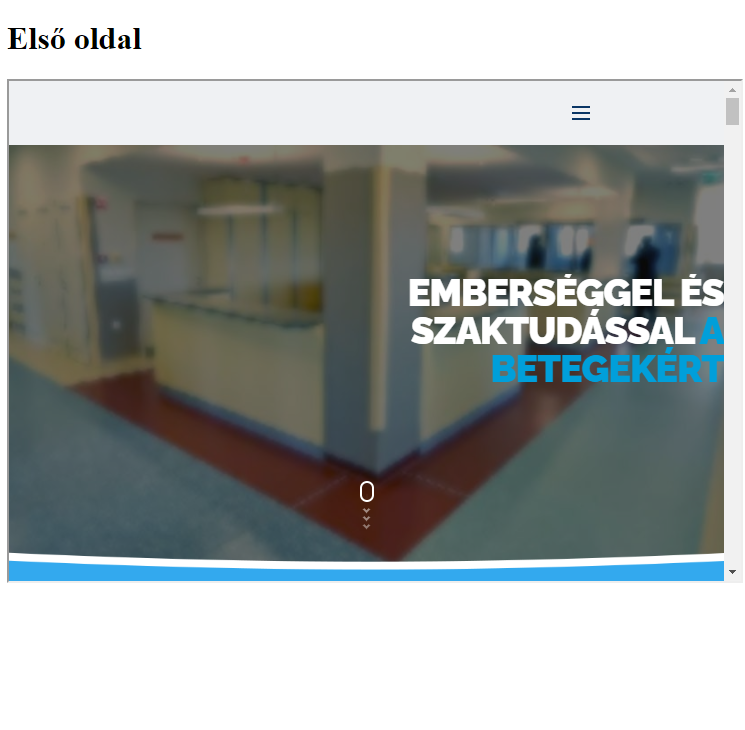
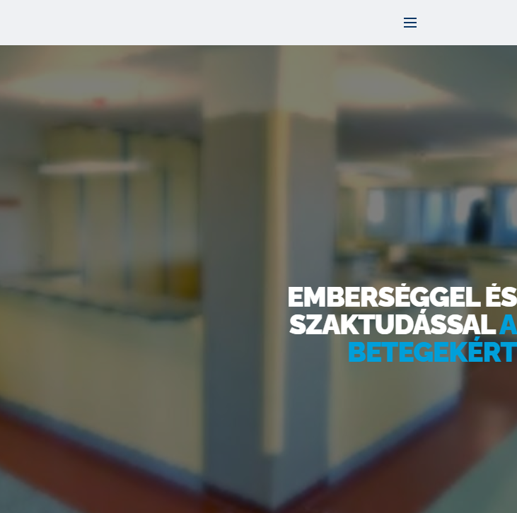

Mit lehet tudni a következő HTML elemekről: picture, source?

A picture HTML-elem arra jó, hogy adott keretbe
más-más képet helyezzünk el más-más képernyő
méret vagy eszköz esetén.
A fenti példánál látható, hogy két törési pont
van: 1200px és 1050 px. Ezt a media-attribútum
szabályozza.
Mindig a nagyobb érték legyen felül.
A képeket a source HTML-elemben az
srcset-attribútummal adjuk meg.
MINDIG KELL EGY IMG ELEM, AMI A PICTURE ELEM
UTOLSÓ ELEME! Ezt használja az a böngésző, amely
nem támogatja a picture-elemet, vagy ha a
source-okban megadott képek sem jók valamiért
(például nem jó a kép formátuma).
Az iframe HTML-elemet arra használjuk, hogy
beágyazzunk egy weboldalt egy másik weboldalba.
Ez a beágyazás lehet többszintű.
Kötelező megadni az src-attribútumot, amely a
beágyazandó weboldal címét adja meg.
A frameborder-attribútum nem kötelező.
Látható, hogy a harmadik.html-ben a
target-attribútum értékét _self állítottuk be.
Kattintsuk rá!

Látható, hogy a legbelső keretben, tehát saját
magában nyílt meg.
Nézzük a target="_parent" esetet.
A fenti kód eredménye.

Látható, hogy a "szülő" keretben, nyílt meg.
Nézzük a target="_top" esetet.
A fenti kód eredménye.

Most már a teljes képet kitölti.
Utolsó esetet, a target="_blank"-tól eltekintve,
amikor is a weboldal új fülön nyílik meg, ha az
iframe name-attribútumának értékét adjuk oda a
link target-jének.